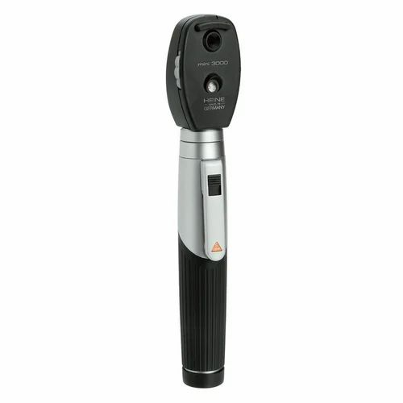

 An ophthalmoscope is a medical instrument that works by allowing healthcare professionals to examine the internal structures of the eye, such as the retina, optic disc, and blood vessels. The device is typically handheld and consists of a light source, lens system, and adjustable aperture. It allows healthcare professionals to detect a wide range of eye conditions, such as macular degeneration, glaucoma, and diabetic retinopathy. It can also be used to monitor the progression of these conditions and to evaluate the effectiveness of treatment.
There are 3 main parts of your nebuliser:
During an ophthalmoscopic exam, the healthcare professional will typically ask the patient to sit in a darkened room and look straight ahead. The healthcare professional will then hold the ophthalmoscope up to the patient's eye and shine a beam of light into the eye. The adjustable aperture on the device allows the healthcare professional to adjust the level of illumination and magnification, allowing for a clearer view of the internal structures of the eye. The healthcare professional will then use the lens system to examine the retina, optic disc, and blood vessels in the eye. They may also use additional lenses to get a closer look at specific areas of the eye. During the exam, the healthcare professional may ask the patient to look in different directions or to focus on different objects in order to get a more complete view of the eye.
There are different types of ophthalmoscopy